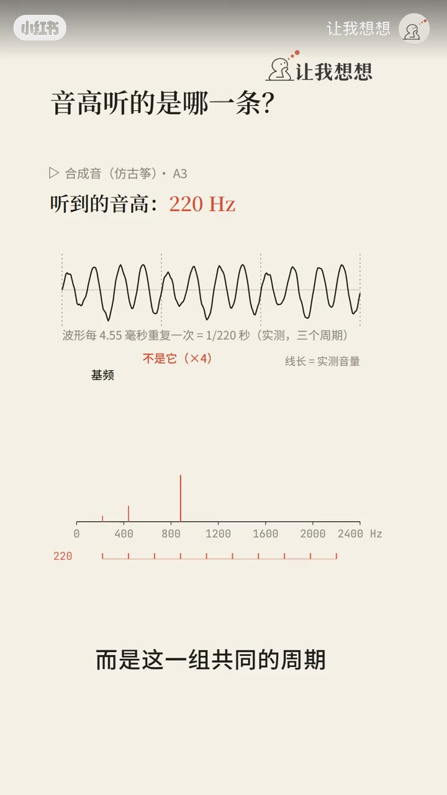
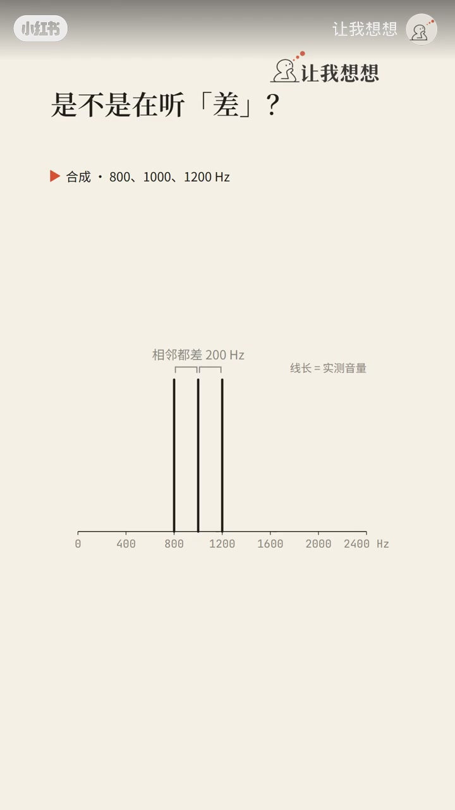
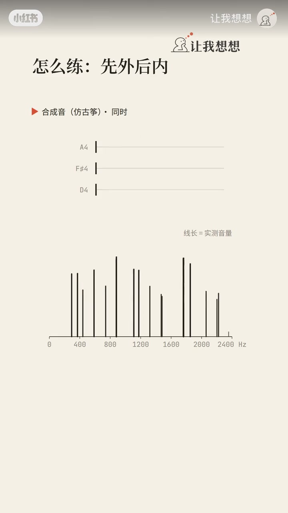
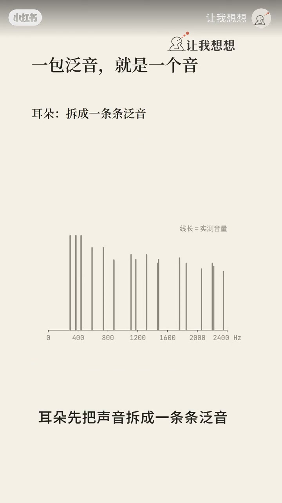

内容要点
账号「让我想想」约三分多钟，用示意动画回答：和弦合在一起时耳朵如何分出几个音。先澄清单音其实是泛音列（ASR「击频」→基频、「耳窝」→耳蜗、「古中」→古筝），再说明消失的基频与「不是听差频」，最后给出听和弦的操作口令：先外后内。
知识结构
[00:00→00:35]
提问
拆开是三音，合上耳朵怎么分？
[00:35→01:50]
单音机制
泛音列、消失的基频、不是差频。
[01:50→03:16]
和弦应用
按整数倍分组；先听外声部再找中间音。
总结
听觉先拆频谱，再按谐波关系打包；听和弦先哼最高与最低，中间最后。
00:00–00:35问题：合在一起怎么分
开场直接问「这里面有几个音」：拆开弹是三个，合在一起耳朵如何分出来？随后先回退到「一个音」的构成。
[00:01] 开场提问：合在一起的和弦里，耳朵怎么分出几个音
Opening: how does the ear split several notes inside a chord?
00:35–01:50泛音列与消失的基频
一根弦响起来不是单一频率，而是基频的 1、2、3…倍，整组叫泛音列；耳蜗按频率位置共振拆开。评论区问古筝某些泛音比基频还响为何音高不跟它走：大脑听的不是最响那条，而是这一组共同的周期——把基频去掉，音高几乎不变，即「消失的基频」。
也不是在听泛音之间的差：800/1000/1200 Hz 两两差 200，整体上移 50 Hz 后差仍是 200，但音高变成约 210——所以耳朵听的不是差。
[00:22] 单音机制：一根弦响的是基频的整数倍泛音列
One string rings a harmonic series: integer multiples of the fundamental.
[00:50] 消失的基频：去掉基频后音高几乎不变——大脑看共同周期
Missing fundamental: remove the base tone and pitch barely changes.

[01:15] 不是听「差频」：频率整体上移后差不变但音高变
Not difference tones: shift the set and the difference stays, pitch moves.
01:50–03:16和弦：整数倍分组与先外后内
大脑靠整数倍关系知道哪些线是一组；把其中一条泛音偏开一点，它就跳出成单独的音。三个音就是三组泛音；但差一个八度时高音泛音都落在低音上，耳朵常糊成一个音。
听和弦策略：最高音最突出、中间最难——先哼最高，再找最低，最后才是中间；也可让中间音早一点出来或加一点颤音，让它浮出来。

[01:40] 分组靠整数倍：偏开一条泛音，它会跳出成单独的音
Grouping needs integer ratios; detune one partial and it pops out alone.
[02:05] 回到和弦：三音=三组泛音，大脑按整数倍打包
A triad is three harmonic bundles packed by integer multiples.
[02:25] 八度易糊成一个音；听和弦先外后内——最高→最低→中间
Octaves smear; hear chords outside-in—top, then bass, then middle.

[02:50] 让中间音早出或加颤音，它会自己浮出来
Cue the middle earlier or add vibrato so it floats out.

[03:05] 收束：耳朵拆泛音，大脑按整数倍打包，一包就是一个音
Close: ear splits partials; brain packs by harmonics—one pack, one note.